Free Planning Tool
Plant & Tree Identifier
Snap a photo, get species matches, and see Montana fire-risk and land-management notes built for homesteaders at the forest edge.
1. Photo
Leaves, bark, or the whole plant
2. Identify
Top species matches with confidence
3. Fire notes
Montana risk, invasives & mitigation
Identify a Plant or Tree
Add plant photos
Add up to 5 photos of the same plant.
Leaf, flower, fruit, or bark — more angles help.
Tap Identify plant when you’re ready.
North-Central U.S. flora · Montana fire-risk notes for 80+ species
- Shoot in good light
- Up to 5 photos per plant
- Flowers & leaves beat bark alone
No account, no login, no data stored on our servers.
Identifying your plant…
This may take a few seconds on slower connections
Identification complete